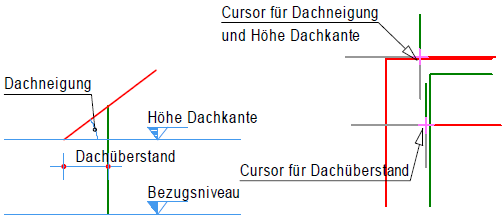
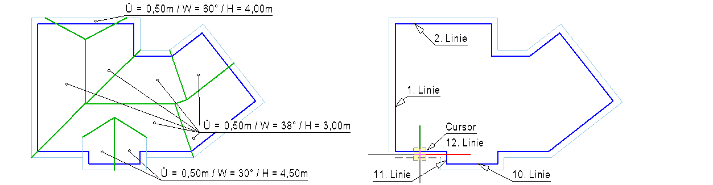
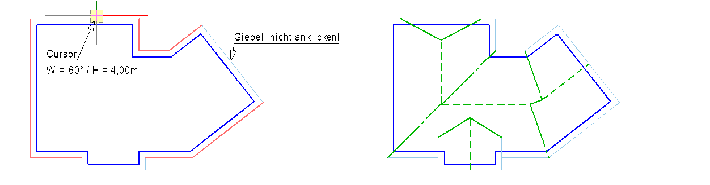

Dachlinien automatisch anhand bekannter Gebäudekanten, Dachneigungen und Dachkantenhöhen ermitteln.
 |
1.Dachüberstand und Gebäudekanten wählen
§Geben Sie unter Dachüberstand den gewünschten Dachüberstand ein und bestätigen Sie die Angabe.
Der Dachüberstand kann für jede Gebäudekante neu definiert werden.
§Bei umlaufend gleichen Dachüberständen:
–Klicken Sie die Gebäudekanten nacheinander umlaufend an der Seite an, an der das Dach überstehen soll. [Linie wählen]. |
§ Bei unterschiedlichen Dachüberständen:
–Klicken Sie bei sich änderndem Dachüberstand zunächst mit der rechten Maustaste in die Zeichnung. –Geben Sie unter Dachüberstand den gewünschten Wert ein und bestätigen Sie die Angabe. –Klicken Sie die Gebäudekante mit dem geänderten Dachüberstand an. –Der geänderte Dachüberstand wird auch für die nächste Gebäudekante verwendet. |
§Klicken Sie nach Auswahl der letzten Gebäudekante unter Linie wählen auf .
Der Dachrand wird als geschlossenes Polygon dargestellt.
2.Dachflächen mit gleicher Neigung und Traufhöhe zuweisen
Sie können jeder Dachkante eine andere Neigung und Höhe zuweisen. Dachflächen mit gleichen Werten können den Dachkanten in einem Zug und in beliebiger Reihenfolge zugewiesen werden. Giebelwänden werden keine Höhe oder Dachneigung zugewiesen.
§Geben Sie unter Dachneigung die Dachneigung in Grad an und bestätigen Sie die Angabe.
§Geben Sie unter Höhe Dachkante die Traufhöhe über einem beliebigen, gleichbleibenden Bezugsniveau an und bestätigen Sie die Angabe.
§Klicken Sie die Dachkanten an, an denen die definierte Dachfläche anliegen soll. [Linie wählen]. Achten Sie darauf, keine Giebelwände auszuwählen.
Die Höhe der Dachkante (Traufhöhe) und die Dachneigung (in Grad) werden an der Dachkante eingeblendet.
§Um einer oder mehreren Dachflächen eine andere Dachneigung oder Traufhöhe zuzuweisen:
–Bestätigen Sie die bisherige Auswahl durch Rechtsklick oder mit der Eingabetaste. (NICHT auf Beenden klicken.) –Geben Sie die Werte für Dachneigung und Höhe Dachkante an und klicken Sie nacheinander die Dachkanten an, deren Dachfläche den angegebenen Werten entsprechen soll. [Linie wählen]. Die Höhe der Dachkante (Traufhöhe) und die Dachneigung (in Grad) werden an der Dachkante eingeblendet. |
§Nachdem Sie jeder Dachkante eine Dachfläche zugewiesen haben, klicken Sie unter Linie wählen auf .
Die Dachlinien (First, Grate, Kehlen) werden angezeigt. Sie können sofort mit einer weiteren Dachausmittlung beginnen.
Um die Darstellung der Dachlinien zu ändern

Wählen Sie die Einstellungen auf der Registerkarte Dachausmittlung:
Registerkarte Dachausmittlung
Voreinstellungen für die Darstellung automatisch ausgemittelter Dachlinien.
Dachrand
Stiftnummer (Linienbreite und -farbe) und Linientyp für die Darstellung des Dachrandes.
Grate und Kehlen
Stiftnummer (Linienbreite und -farbe) und Linientyp für die Darstellung der Grate und Kehlen.
First
Stiftnummer (Linienbreite und -farbe) und Linientyp für die Darstellung des Firstes.
Die Symbolik der Verbindungsmittel kann nicht geändert werden.
Beispiel:
 |
|
Diese Dachausmittlung soll gezeichnet werden. |
Linien auf der Seite anklicken, wo der Dachüberstand liegt. |
 |
|
Klicken Sie nur die Linien an, für die es Dachneigung und eine Höhe gibt. |
Fertige Dachausmittlung. |
Zugehörige Referenzen: